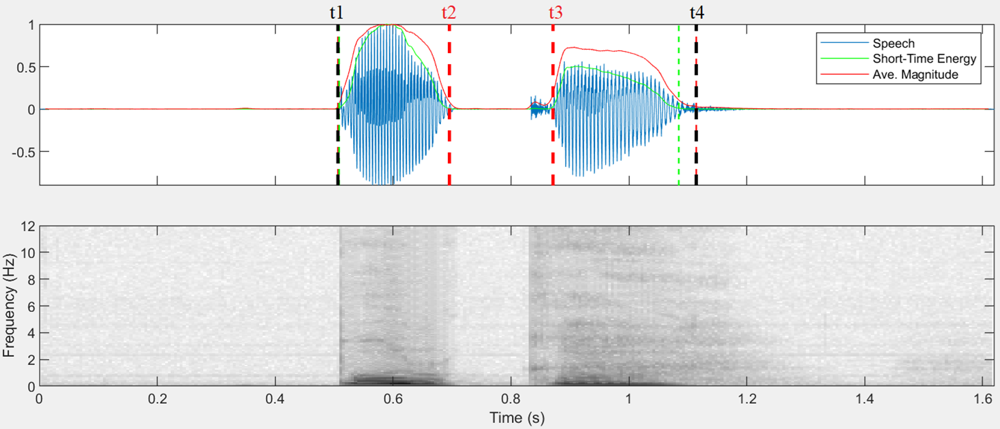

The central source of information for the geminates analysis is the ‘index.xlsx’ file, which you can view on this page under "Stop Analysis".
You can also find it on the MQ Onedrive at <language>\Obstruent analysis\collated stops.
Each plosive has been coded for a number of variables, generally relating to:
You may wish to open this explainer in a new window to refer back to it: click here.
In more detail, each row gives information about a single stop. The columns give the following information:
Factor |
Column heading |
Description |
Dependencies |
Metadata |
ID |
A unique ID which links a row in the index file to an audio file containing the plosive. |
|
Context |
The utterance containing the stop. |
|
|
Translation |
The translation of the utterance containing the stop. |
|
|
Source |
The audio file containing the utterance. |
|
|
Timestamp |
A timestamp of the utterance within the audio file. Mostly given in automatic ELAN format of B=HH:MM:SS.MS. |
|
|
Morpho/phonological |
Stop |
The IPA value of the stop. |
|
PoA |
Place of articulation of the stop. |
|
|
StopType |
The type of stop (coded as ‘lenis’ or ‘geminate’ for our purposes). This is based on the present orthographical representation in the language BEFORE phonetic analysis. |
Automatically generated from ‘Stop’. |
|
Monomorphemic |
Whether the stop is found within a monomorphemic word (Y) or not (N). |
|
|
Preceding morpheme |
The gloss of the morpheme preceding the morpheme containing the stop. |
|
|
Following morpheme |
The gloss of the morpheme following the morpheme containing the stop. |
|
|
Preceding morae |
The number of morae preceding the stop in the word. |
Semi-automated based on IPA. |
|
Socio |
Speaker |
The initials of the speaker pronouncing the stop. |
|
Acoustic |
excl |
A binary value indicating whether the person inspecting the spectrogram believes this token should be excluded from analysis. |
|
dsto |
Duration of the stop. |
|
|
vsto |
The average harmonic ratio for the stop. >0.5 indicates high probability of voicing. |
|
|
LF |
Whether vsto may be impacted by (background) low frequency noises. 0 indicates no interfering noise; 1 indicates some interfering noise has been detected. |
|
|
note |
Any notes left by the person inspecting the spectrogram. |
|
There are, additionally, a number of columns which are exist for other purposes (e.g. generation of other values, Matlab workflow, etc.).
Column Heading |
Description |
Dependencies |
Word |
The full phonological word containing the stop (in standard orthography). |
|
dutt |
Duration of the utterance containing the stop. |
|
t1 |
The timestamp (within the audio clip) where the utterance begins. |
|
t2 |
The timestamp (within the audio clip) where the plosive begins. |
|
t3 |
The timestamp (within the audio clip) where the plosive ends. Note: aspiration is considered part of the stop in this analysis. |
|
t4 |
The timestamp (within the audio clip) where the utterance ends. |
|
Lexeme |
The lexeme containing the stop. Note: this column exists purely for the purposes of workflow in calling groups of stops in the phonetic analysis – this column is not used for analysis. |
Semi-automatically generated from ‘Word’. Stops in bound morphemes are coded for morpheme gloss rather than form to deal with vowel harmony. |
IPA |
The full phonological word containing the stop (in IPA). |
Automatically generated from ‘Word’. |
IPA (no boundaries) |
The full phonological word containing the stop (in IPA), omitting any morphological boundaries. |
Automatically generated from ‘Word’. |
Fig 1: exemplar stop analysis – red lines indicate boundaries used in this analysis.
